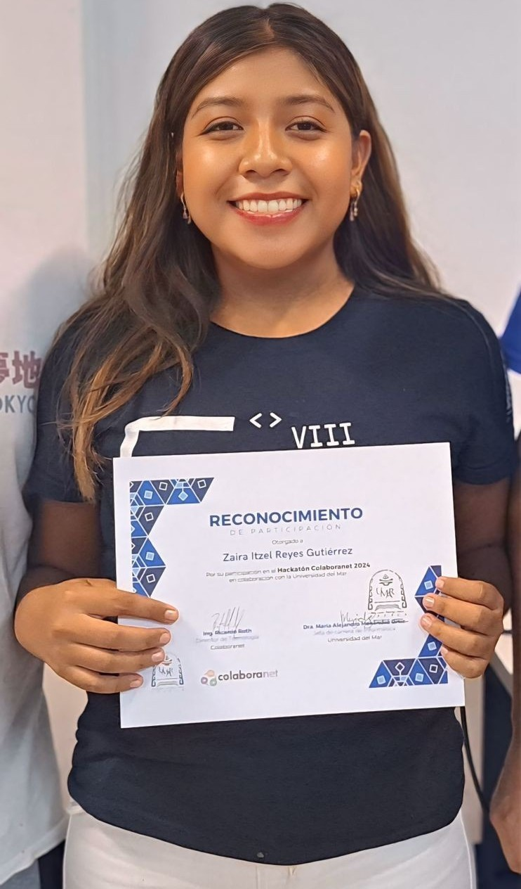
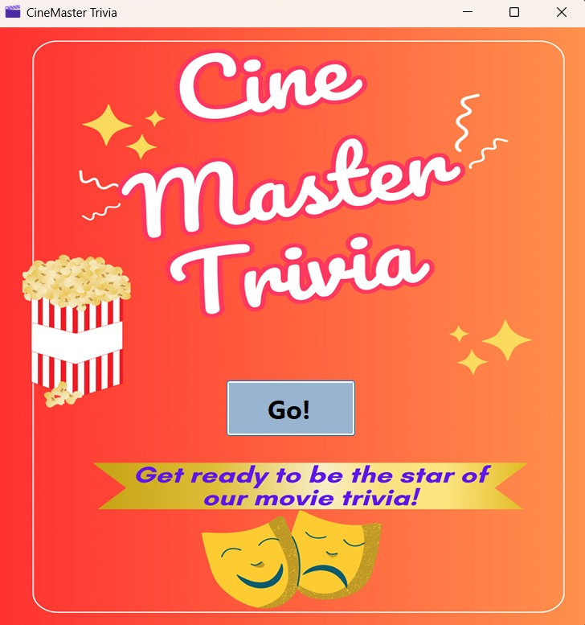
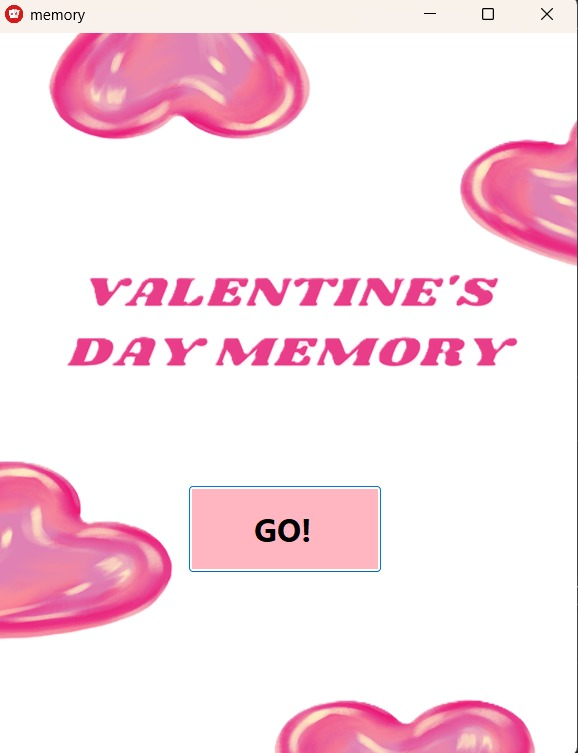
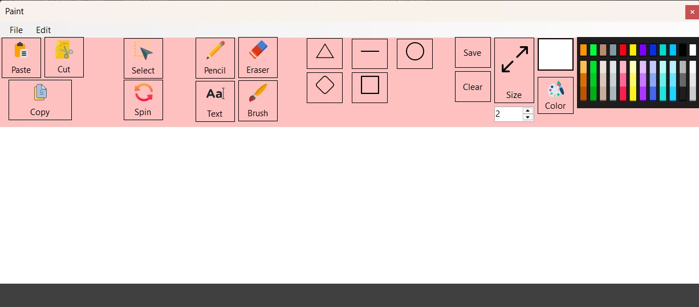
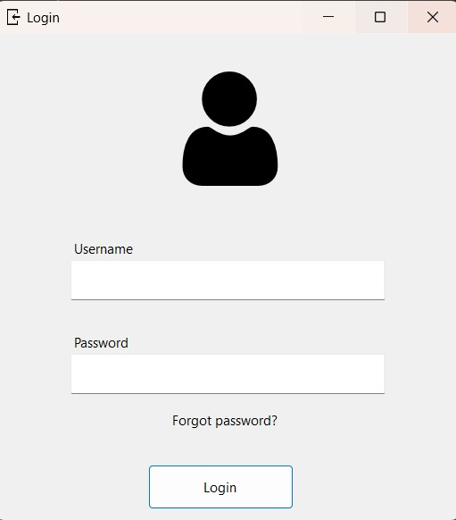
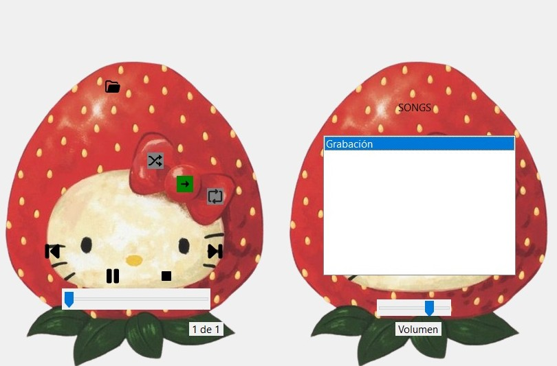
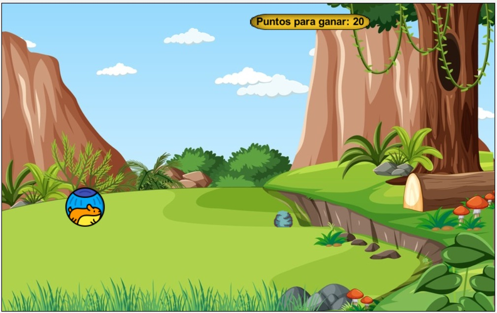
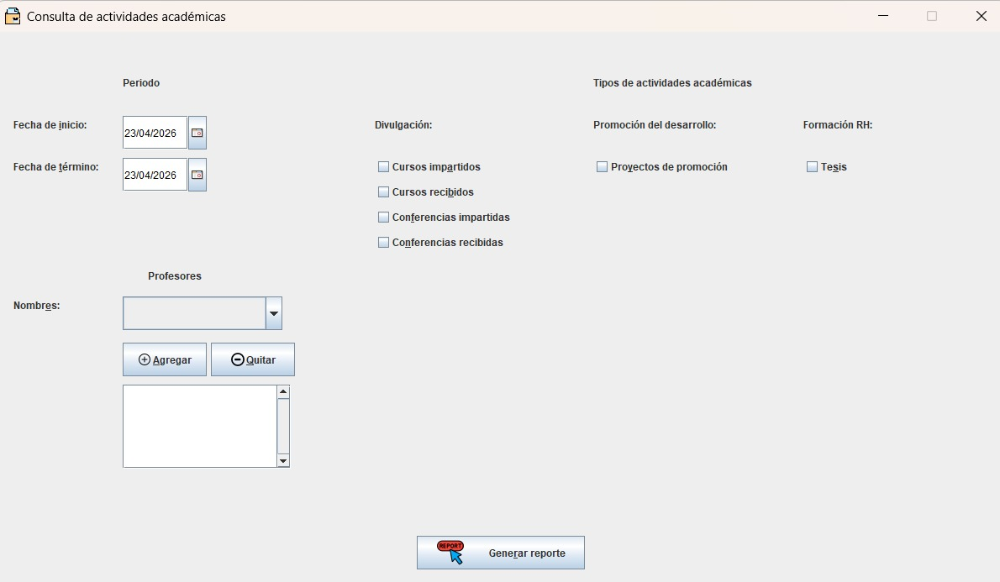

Lic. en Informática · UMAR Campus Puerto Escondido, Oaxaca
Branding, contenido, redes sociales y experiencia de usuario
Python, bases de datos, visualización e insights
Quién soy

📸 Foto secundariaSoy Zaira Itzel Reyes Gutierrez, estudiante de Licenciatura en Informática en la Universidad del Mar (UMAR), Campus Puerto Escondido, Oaxaca. Combino lo técnico con lo creativo para construir soluciones.
Mi perfil: programo sistemas complejos y también diseño estrategias de marca. Creo firmemente que el futuro pertenece a quienes entienden tanto los datos como las personas.
Estrategia de contenido, branding, redes sociales y diseño web con impacto real en marcas locales.
Python, bases de datos relacionales, Docker y análisis de datos en entorno fintech profesional.
Herramientas
Evidencias académicas

Trivia es una aplicación de escritorio desarrollada en Visual Basic .NET con Windows Forms y .NET 8, diseñada para poner a prueba los conocimientos del usuario mediante preguntas de opción múltiple organizadas por niveles de dificultad. El jugador ingresa su nombre para personalizar la experiencia y avanza por tres niveles (fácil, intermedio y difícil), cada uno con preguntas progresivas, temporizador propio y un sistema de puntuación que recompensa aciertos y penaliza errores. La partida finaliza si se cometen dos errores, el puntaje llega a cero o el tiempo se agota. El proyecto se implementó de forma completamente funcional, integrando navegación fluida entre formularios, transferencia de datos y lógica de juego en tiempo real. Además de ofrecer una experiencia interactiva de entretenimiento educativo, permitió fortalecer habilidades en programación orientada a objetos, diseño de interfaces y desarrollo de aplicaciones de escritorio, beneficiando tanto a usuarios como al propio desarrollador en su formación técnica.

Memorama es una aplicación de escritorio desarrollada en Visual Basic .NET con Windows Forms y .NET 8 que recrea el clásico juego de memoria en formato digital. Permite jugar en modo individual contra la computadora o en modo de dos jugadores, con nombres personalizados y turnos alternados. El juego cuenta con tres niveles de dificultad progresivos, donde aumenta la cantidad de cartas y pares a encontrar, incorporando un sistema de puntuación que recompensa aciertos y penaliza errores. Si un jugador falla, las cartas se ocultan nuevamente y el turno cambia; la partida puede finalizar al completar el tablero o si el puntaje de un jugador cae por debajo de cero. El proyecto se desarrolló de forma funcional, integrando distribución aleatoria de cartas, lógica de turnos y detección automática de ganador, además de un modelo orientado a objetos para las cartas. Más allá del entretenimiento, fortalece habilidades en programación orientada a objetos, manejo de eventos y desarrollo de interfaces interactivas, aportando tanto valor educativo para los usuarios como experiencia técnica para el desarrollador.

MiniPaint es una aplicación de escritorio desarrollada en Visual Basic .NET con Windows Forms y GDI+, inspirada en editores clásicos como Paint. Permite crear y editar dibujos sobre un lienzo digital mediante una amplia variedad de herramientas como lápiz, pincel, figuras geométricas, borrador, relleno por inundación y texto. Además, incluye funciones de selección para copiar, cortar, pegar, rotar o eliminar áreas, junto con opciones para elegir colores, ajustar el grosor del trazo y gestionar archivos en distintos formatos de imagen. También incorpora historial de acciones para deshacer cambios y atajos de teclado para operaciones de portapapeles. El proyecto se desarrolló de forma completamente funcional, integrando múltiples herramientas, un sistema de deshacer basado en estados y un algoritmo de relleno implementado desde cero. Representa un avance significativo en complejidad, fortaleciendo habilidades en programación gráfica, manejo de eventos, estructuras de datos y manipulación de imágenes, ofreciendo una herramienta útil para usuarios y una sólida experiencia técnica para el desarrollador.

ABCEscolar es una aplicación de escritorio desarrollada en Visual Basic .NET con Windows Forms y base de datos en Microsoft Access, diseñada para gestionar la información de una institución educativa de forma centralizada. El sistema cuenta con inicio de sesión con autenticación por roles (administrador, profesor y alumno), redirigiendo a cada usuario a su panel correspondiente. El administrador puede realizar operaciones completas (CRUD) sobre alumnos, profesores y cursos, mientras que los alumnos consultan e inscriben materias y los profesores gestionan calificaciones. La aplicación integra conexión a base de datos mediante OleDb, con una arquitectura que separa la lógica de acceso a datos de la interfaz y utiliza clases orientadas a objetos para representar las entidades principales. Se logró un sistema funcional, escalable y organizado, que fortalece habilidades en programación con bases de datos, diseño de software multiusuario y desarrollo de aplicaciones con un enfoque práctico y real

Reproductor MP3 es una aplicación de escritorio desarrollada en Visual Basic .NET con Windows Forms que permite cargar y reproducir archivos de audio de forma sencilla e intuitiva. Las canciones se organizan automáticamente en una lista de reproducción desde la cual el usuario puede seleccionarlas y controlarlas mediante funciones de play, pausa, detener, anterior y siguiente, además de una barra de progreso interactiva y control de volumen independiente. Incluye modos de reproducción normal, repetición y aleatorio, junto con atajos de teclado para una experiencia más ágil y un diseño visual con efectos translúcidos. El proyecto se implementó de forma completamente funcional, integrando reproducción multimedia mediante Windows Media Player, sincronización en tiempo real y una interfaz interactiva. Refuerza habilidades en integración de componentes externos, manejo de eventos y desarrollo de aplicaciones multimedia, ofreciendo una herramienta útil para el usuario y una sólida experiencia técnica para el desarrollador.

Brinca Bob Brinca es un videojuego de tipo endless runner desarrollado en Java con Greenfoot, donde el jugador controla a un hámster que debe saltar obstáculos en movimiento a lo largo del escenario. El juego incluye un menú principal con música, instrucciones y control de audio, y presenta una mecánica progresiva en la que la dificultad aumenta conforme aparecen obstáculos con mayor frecuencia. La física del salto se simula manualmente mediante velocidad y aceleración, mientras que la detección de colisiones determina el fin de la partida o la victoria al superar el reto. El proyecto se implementó de forma completamente funcional, integrando múltiples pantallas, efectos de sonido, dificultad dinámica y una arquitectura orientada a objetos basada en herencia para reutilizar lógica entre enemigos. Refuerza habilidades en programación orientada a objetos, simulación de física y desarrollo de videojuegos interactivos, ofreciendo una experiencia entretenida para el usuario y una sólida aplicación práctica de conceptos académicos.
CinePlusZ es una aplicación de escritorio desarrollada en Java con Swing que permite gestionar y consultar un catálogo de películas mediante una base de datos SQLite creada automáticamente al iniciar. El sistema almacena información detallada de cada película —como título, año, sinopsis, géneros, países y presupuesto— aplicando validaciones y relaciones entre tablas para garantizar la integridad de los datos. Desde su interfaz gráfica, el usuario puede realizar operaciones completas (CRUD), visualizar pósters y ejecutar consultas con filtros combinables, todo mediante una navegación intuitiva con atajos de teclado. El proyecto se implementó de forma completamente funcional bajo una arquitectura en capas, integrando acceso a datos con JDBC, manejo de excepciones y una interfaz robusta. Representa un desarrollo de nivel profesional que consolida habilidades en programación orientada a objetos, bases de datos relacionales y diseño de software estructurado, ofreciendo una herramienta útil y una sólida experiencia técnica.

Const360 es un sistema de escritorio desarrollado en Java con Swing que permite gestionar y dar seguimiento a las actividades académicas de profesores mediante una base de datos SQLite creada automáticamente. El sistema maneja múltiples tipos de actividades —como conferencias, cursos, tesis y proyectos— con información detallada y soporte para archivos adjuntos, diferenciando el acceso entre profesor y superusuario. Además, permite generar reportes en PDF de forma automática utilizando JasperReports, facilitando la consulta y análisis de la información. Implementado bajo una arquitectura en capas y desarrollado en equipo, el sistema es completamente funcional e integra operaciones CRUD, control de usuarios, manejo de excepciones y documentación técnica completa. Representa un proyecto de nivel profesional que consolida habilidades en desarrollo colaborativo, bases de datos, generación de reportes y diseño de software estructurado, ofreciendo una solución real para instituciones educativas.
Trayectoria profesional
Estoy abierta a oportunidades en marketing digital, análisis de datos o desarrollo de software. ¡Escríbeme!